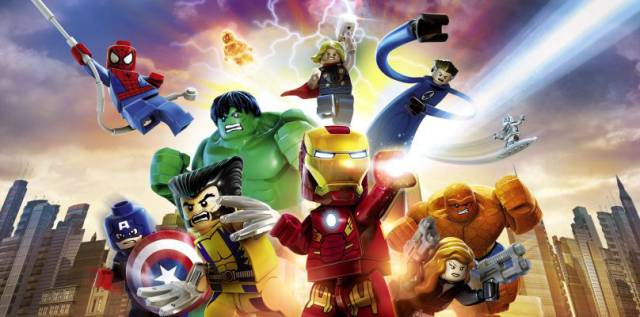
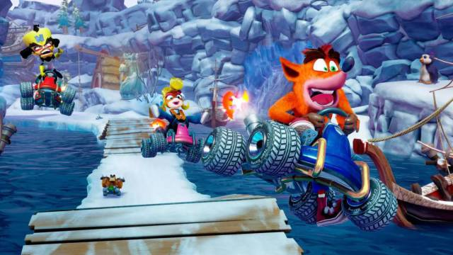
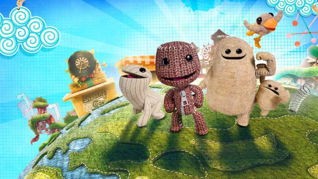
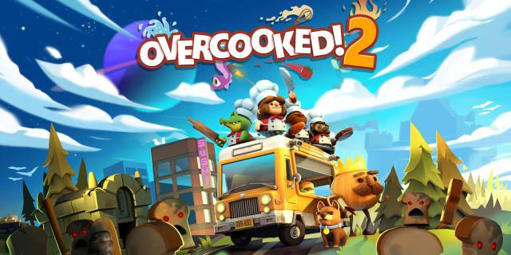
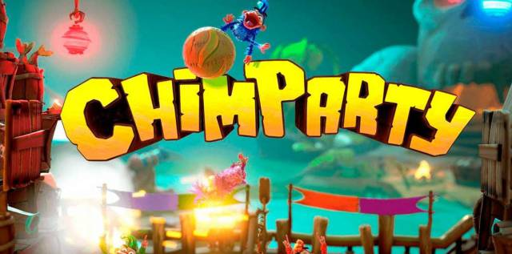
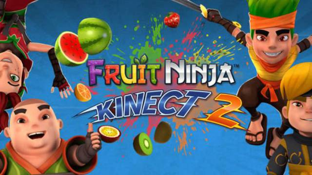
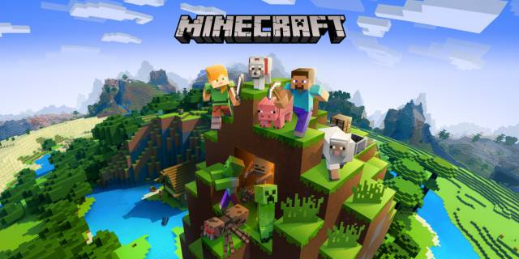
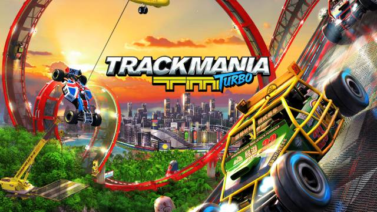

Videojuegos para todas las edades para combatir la cuarentena obligatoria por la pandemia de coronavirus.
Niños y niñas en casa, padres compartiendo el teletrabajo de la mejor manera posible y muchas horas muertas. Tantas que los juegos de mesa, Netflix y otros entretenimientos pueden acabar agotándose cuando parecía imposible. Ante esta situación, en Meristation hemos decidido recopilar juegos pensados para disfrutar en familia y, naturalmente, sin salir de casa, que las consolas actuales tienen a su disposición. Pensados para entretenerse con los más pequeños de la casa o con nuestras parejas, aunque no sean habituales del mundo del videojuego.
Juegos para disfrutar en familia para PS4 y Xbox One
LEGO Marvel's Avengers (y otros juegos LEGO)
Toda la saga de juegos LEGO es ideal para poder adentrarse con los más pequeños en el mundo de los videojuegos. Se pueden jugar en cooperativo, su dificultad es baja y la ambientación que escojamos (Vengadores, Harry Potter, la Lego Película...) puede servir para atrapar a los 'peques' según lo fans que sean de cada licencia. Mezcla las tramas principales de las películas en las que se inspiran con pequeños puzles y rompecabezas heredados de la construcción de LEGO. También es una opción para Switch.
Crash Team Racing Nitro-Fueled
La versión Mario Kart para las consolas no Nintendo que más interés ha generado en los últimos tiempos. Un remake del clásico de PSX que llega con posibilidad de jugar hasta cuatro jugadores a la vez y con contenido nuevo que se suma a todo lo que ya conocíamos de modos, personajes, circuitos y demás. El acabado visual es de primera y si lo que queréis es jugar en local, es muy recomendable. También es una opción para Switch.
LittleBigPlanet 3
Compralo aquí: PS4
La tercera entrega de la mítica saga de MediaMolecule es todo lo que siempre hemos querido compartir con los pequeños: posibilidad de crear mundos a medida para que los superen sin frustraciones o, directamente, poder acceder a los miles de mundos creados por otros usuarios y que podremos filtrar por temáticas y por dificultad. Un juego totalmente adaptable a cada experiencia, persona y que permite jugar hasta cuatro a la vez.
Overcooked! 2
Uno de esos juegos tremendamente divertidos, tanto en cooperativo como en competitivo. Con partidas cortas de cinco minutos, entre otras, la diversión está asegurada intentando colaborar con nuestros hijos, o compitiendo con ellos, mientras intentamos salvar todos los problemas culinarios que nos encontramos a lo largo de las rondas, que no serán pocos. También para cuatro personas a la vez. Otra opción también disponible en Switch.
Chimparty
Compralo aquí: PS4
Título de corte festivo para hasta cuatro jugadores y que usa la aplicación PlayLink con 18 modos variados en los que muchas de nuestras acciones se basan simplemente en pulsar un botón. No hay excusa si no sabemos coger un DualShock porque este juego lo pone fácil a base de rondas cortas y partidas distendidas para pasar una tarde entretenida.
Fruit Ninja Kinect 2
Compralo aquí: Xbox One
¿Tienes Kinect porque te vino con la primera Xbox One y no lo has usado más que para la cámara? Pues es el momento de desempolvarlo. A los pequeños todo lo que sean controles por movimiento les encanta, y Fruit Ninja Kinect 2 traslada eso mismo del mítico juego para smartphones al uso de la cámara de Xbox One.
Minecraft
A lo mejor este confinamiento viene bien no solo para que los niños jueguen con nosotros, sino para que nosotros también nos adentremos en sus mundos… Como puede ser el de Minecraft. El título de construcción de mundos a base de bloques tiene una función interesante para consolas: poder jugar con pantalla dividida hasta cuatro, además de poder invitar amigos online. Una manera de compartir tareas y aventuras en el mundo virtual. También es una opción para Switch.

Trackmania turbo
Trackmania Turbo es un juego basado en carreras alocadas para hasta cuatro jugadores a la vez, con un estilo arcade y con pantalla partida para cuatro jugadores. Contamos con más de 200 pistas en cuatro localizaciones distintas, además de poder jugar a las creaciones de muchos otros usuarios. Si lo que buscáis es algo sencillo y directo, es una buena opción para las consolas actuales.

VAMOS A JUGAR
UTILIZA BARRA ESPACIADORA Y LAS FECHAS DE ARRIBA, ABAJO, IZQUIERDA, DERECHA
| Super Mario flash | juegos gratis con Games68.com |